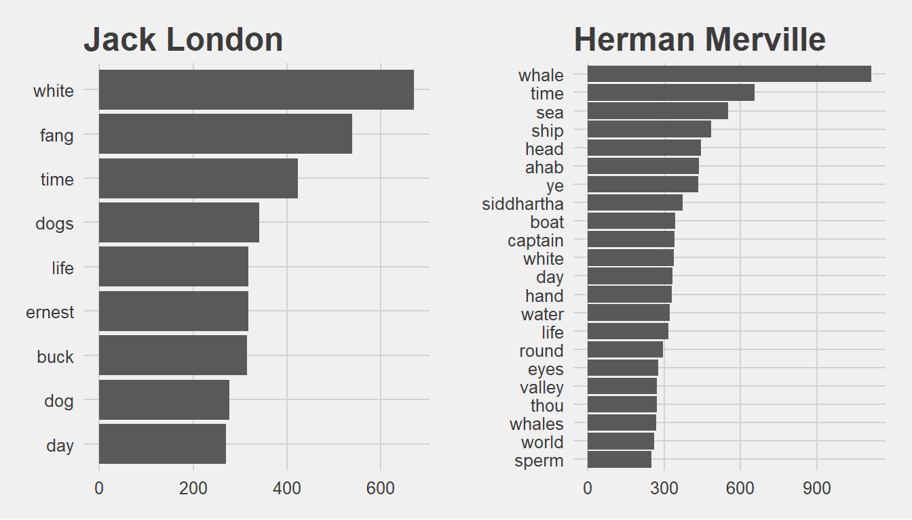
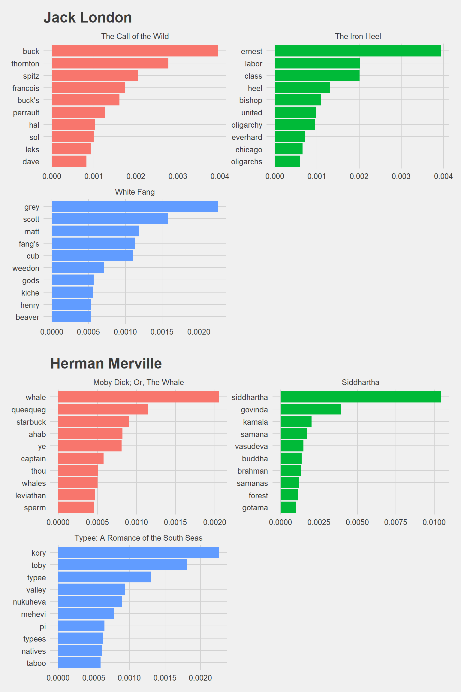

Submitted 2018.20.02
1. Explain in your words what the unnest_token function does:
It is a function from Tidytext library which restructures text: Creates one token for each row. It splits a text column (this is our input) into tokens (like words). It helps us doing this tokenization.
2. Explain your words what the gutenbergr package does:
Project Gutenberg digitizes the books for which copyright has expired with the help of volunteers. Gutenbergr R package provides these books to R users. We can download and process these books using this library.
3. Explain in your words how sentiment lexicon work:
They are like dictionaries which matches words with their sentiment or emotion. Such as classifying them into Positive - Negative - Neutral categories. Once we match the words in our text with lexicon, we can start analyzing the frequencies. Even if we dont know the language in which the text has been written, we can have an overall understanding.
4. How does inner_join provide sentiment analysis functionality:
We match the words in our text with the sentiments in the lexicon. There can be lots of words which are not available in the lexicon. Similarly, there can be lots of words in the lexicon which are not mentioned in our text. inner_join brings us the intersection between our text and the lexicon. So that we can go ahead with our analysis with the words we have in the lexicon.
#tidy_books %>%
# filter(book == "Emma") %>%
# inner_join(nrcjoy) %>%
# count(word, sort = TRUE)5. Explain in your words what tf-idf does:
It is a heuristic approach which tells us how importand a word is in the text we are analyzing. It computes the frequencies (tf) and adds a tweak(idf). This tweak is about how rarely that word is used: It reduces the importance of a word used many times in the text and increases the importance of a word not used that much.
6. Explain why you may want to do tokenization by bigram:
If I am trying to capture the right sentiment then I may use bigram.
After removing the stopwords I may get a list of high frequency words like ‘good’ ‘nice’. However if these are used together with the word ‘not’ then in fact these are negative phrases: ‘not good’, ‘not nice’. It would be a critical error if I dont look into this.
7. Please install the following packages, if you have not already:
- tidyverse
- tidytext
- gutenbergr
Pick two or more authors that you are familiar with, download their texts using the gutenbergr package, and do a basic analysis of word frequencies and TF-IDF
library(gutenbergr)
library(stringr)
library(dplyr)
library(tidytext)
library(ggplot2)
library(ggthemes)
library(gridExtra)
library(scales)gutenberg_works(str_detect(author, "Herman")) %>%
select(gutenberg_id, title) %>%
head()## # A tibble: 6 x 2
## gutenberg_id title
## <int> <chr>
## 1 15 Moby Dick
## 2 1900 Typee: A Romance of the South Seas
## 3 2489 Moby Dick; Or, The Whale
## 4 2500 Siddhartha
## 5 2694 I and My Chimney
## 6 4045 Omoo: Adventures in the South SeasGet the metadata
meta <- as.tbl(gutenberg_metadata)
names(meta)## [1] "gutenberg_id" "title" "author"
## [4] "gutenberg_author_id" "language" "gutenberg_bookshelf"
## [7] "rights" "has_text"Find another way to see Moby Dick and White Fang novels
meta %>%
filter(author == "Melville, Herman",
language == "en",
gutenberg_id == 2489,
has_text,
!str_detect(rights, "Copyright")) %>%
distinct(title, gutenberg_id)## # A tibble: 1 x 2
## gutenberg_id title
## <int> <chr>
## 1 2489 Moby Dick; Or, The Whalemeta %>%
filter(author == "London, Jack",
language == "en",
title == 'White Fang',
has_text,
!str_detect(rights, "Copyright")) %>%
distinct(title, gutenberg_id)## # A tibble: 1 x 2
## gutenberg_id title
## <int> <chr>
## 1 910 White FangDownload the best books from Jack London and Herman Melville
LondonBooks <- gutenberg_download(c(910, 215, 1164))## Determining mirror for Project Gutenberg from http://www.gutenberg.org/robot/harvest## Using mirror http://aleph.gutenberg.orgMervilleBooks <- gutenberg_download(c(2500, 2489, 1900))Convert them to Tidy format
tidy_London <- LondonBooks %>%
unnest_tokens(word, text) %>%
anti_join(stop_words)
tidy_Merville <- MervilleBooks %>%
unnest_tokens(word, text) %>%
anti_join(stop_words)Have a look at the top 10 words in these books
tidy_London %>%
count(word, sort = TRUE) %>%
head(10)tidy_Merville %>%
count(word, sort = TRUE) %>%
head(10)It doesnt surprise me to see “Whale” and “White Fang” on the top. The wolf and the the whale are both natural hunters in the wild these autors wrote about.
p1 <- tidy_London %>%
count(word, sort = TRUE) %>%
filter(n > 250) %>%
mutate(word = reorder(word, n)) %>%
ggplot(aes(word, n)) + geom_col() + xlab(NULL) + coord_flip() +
ggtitle("Jack London") +
theme_fivethirtyeight()
p2 <- tidy_Merville %>%
count(word, sort = TRUE) %>%
filter(n > 250) %>%
mutate(word = reorder(word, n)) %>%
ggplot(aes(word, n)) + geom_col() + xlab(NULL) + coord_flip() +
ggtitle("Herman Merville") +
theme_fivethirtyeight()
grid.arrange(p1, p2, ncol=2)
library(tidyr)
frequency <- bind_rows(mutate(tidy_Merville, author = "Herman Merville"),
mutate(tidy_London, author = "Jack London")) %>%
mutate(word = str_extract(word, "[a-z']+")) %>%
count(author, word) %>%
group_by(author) %>%
mutate(proportion = n / sum(n)) %>%
select(-n) %>%
spread(author, proportion) %>%
gather(author, proportion, `Herman Merville`)ggplot(frequency, aes(x = proportion, y = `Jack London`, color = abs(`Jack London` - proportion))) +
geom_abline(color = "gray40", lty = 2) +
geom_jitter(alpha = 0.1, size = 2.5, width = 0.3, height = 0.3) +
geom_text(aes(label = word), check_overlap = TRUE, vjust = 1.5) +
scale_x_log10(labels = percent_format()) +
scale_y_log10(labels = percent_format()) +
theme(legend.position="none") +
labs(y = "Jack London", x = NULL)
One guy is focusing on the wolves (fang meaning wolf) and the other is talking about the whales in general, nicely visible in the plot. Wolf and Whale makes them different.
We see that they are sharing quite a lot words. These are scattered around the 45 degree line. Lets see the correlation score.
cor.test(data = frequency[frequency$author == "Herman Merville",],
~ proportion + `Jack London`)##
## Pearson's product-moment correlation
##
## data: proportion and Jack London
## t = 50.569, df = 8056, p-value < 2.2e-16
## alternative hypothesis: true correlation is not equal to 0
## 95 percent confidence interval:
## 0.4741102 0.5072614
## sample estimates:
## cor
## 0.4908635There is correlation but not so high…
Now lets see tf-idf to see the most important words in these books.
LondonBooks <- gutenberg_download(c(910, 215, 1164), meta_fields = "title")
MervilleBooks <- gutenberg_download(c(2500, 2489, 1900), meta_fields = "title")
LondonBooks %>%
count(title)## # A tibble: 3 x 2
## title n
## <chr> <int>
## 1 The Call of the Wild 3031
## 2 The Iron Heel 9605
## 3 White Fang 7266MervilleBooks %>%
count(title)## # A tibble: 3 x 2
## title n
## <chr> <int>
## 1 Moby Dick; Or, The Whale 23571
## 2 Siddhartha 3921
## 3 Typee: A Romance of the South Seas 11183London_words <- LondonBooks %>%
unnest_tokens(word, text) %>%
count(title, word, sort = TRUE) %>%
ungroup()
London_total_words <- London_words %>%
group_by(title) %>%
summarize(total = sum(n))
London_words <- left_join(London_words, London_total_words)
Merville_words <- MervilleBooks %>%
unnest_tokens(word, text) %>%
count(title, word, sort = TRUE) %>%
ungroup()
Merville_total_words <- Merville_words %>%
group_by(title) %>%
summarize(total = sum(n))
Merville_words <- left_join(Merville_words, Merville_total_words)London_words <- London_words %>%
bind_tf_idf(word, title, n)
head(London_words)## # A tibble: 6 x 7
## title word n total tf idf tf_idf
## <chr> <chr> <int> <int> <dbl> <dbl> <dbl>
## 1 The Iron Heel the 6539 88675 0.0737 0 0
## 2 White Fang the 5148 72920 0.0706 0 0
## 3 The Iron Heel and 3407 88675 0.0384 0 0
## 4 The Iron Heel of 3319 88675 0.0374 0 0
## 5 White Fang and 3004 72920 0.0412 0 0
## 6 The Call of the Wild the 2283 32121 0.0711 0 0Merville_words <- Merville_words %>%
bind_tf_idf(word, title, n)
head(Merville_words)## # A tibble: 6 x 7
## title word n total tf idf tf_idf
## <chr> <chr> <int> <int> <dbl> <dbl> <dbl>
## 1 Moby Dick; Or, The Whale the 14440 216060 0.0668 0 0
## 2 Typee: A Romance of the South Se~ the 8564 114725 0.0746 0 0
## 3 Moby Dick; Or, The Whale of 6603 216060 0.0306 0 0
## 4 Moby Dick; Or, The Whale and 6428 216060 0.0298 0 0
## 5 Typee: A Romance of the South Se~ of 5093 114725 0.0444 0 0
## 6 Moby Dick; Or, The Whale a 4716 216060 0.0218 0 0London_words %>%
select(-total) %>%
arrange(desc(tf_idf)) %>%
head()## # A tibble: 6 x 6
## title word n tf idf tf_idf
## <chr> <chr> <int> <dbl> <dbl> <dbl>
## 1 The Call of the Wild buck 313 0.00974 0.405 0.00395
## 2 The Iron Heel ernest 318 0.00359 1.10 0.00394
## 3 The Call of the Wild thornton 81 0.00252 1.10 0.00277
## 4 White Fang grey 150 0.00206 1.10 0.00226
## 5 The Call of the Wild spitz 60 0.00187 1.10 0.00205
## 6 The Iron Heel labor 163 0.00184 1.10 0.00202Merville_words %>%
select(-total) %>%
arrange(desc(tf_idf)) %>%
head()## # A tibble: 6 x 6
## title word n tf idf tf_idf
## <chr> <chr> <int> <dbl> <dbl> <dbl>
## 1 Siddhartha siddhart~ 374 0.00952 1.10 0.0105
## 2 Siddhartha govinda 140 0.00356 1.10 0.00391
## 3 Typee: A Romance of the South Seas kory 236 0.00206 1.10 0.00226
## 4 Moby Dick; Or, The Whale whale 1094 0.00506 0.405 0.00205
## 5 Siddhartha kamala 72 0.00183 1.10 0.00201
## 6 Typee: A Romance of the South Seas toby 189 0.00165 1.10 0.00181p3 <- London_words %>%
arrange(desc(tf_idf)) %>%
mutate(word = factor(word, levels = rev(unique(word)))) %>%
group_by(title) %>%
top_n(10) %>%
ungroup %>%
ggplot(aes(word, tf_idf, fill = title)) +
geom_col(show.legend = FALSE) +
labs(x = NULL, y = "tf-idf") +
facet_wrap(~title, ncol = 2, scales = "free") +
theme_fivethirtyeight() + ggtitle("Jack London") +
coord_flip()
p4 <- Merville_words %>%
arrange(desc(tf_idf)) %>%
mutate(word = factor(word, levels = rev(unique(word)))) %>%
group_by(title) %>%
top_n(10) %>%
ungroup %>%
ggplot(aes(word, tf_idf, fill = title)) +
geom_col(show.legend = FALSE) +
labs(x = NULL, y = "tf-idf") +
facet_wrap(~title, ncol = 2, scales = "free") +
theme_fivethirtyeight() + ggtitle("Herman Merville") +
coord_flip()
grid.arrange(p3, p4, nrow=2)
It is interesting to see the high frequency words we plotted in the first part disappeared after we applied tf_idf. White, Fang, Whale, Sea, Boat are all gone. This is in the nature of tf-idf algorithm: decreases the weight for commonly used words and increases the weight for words that are not used very much.
Thank you for reading and giving feedback